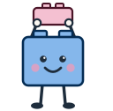
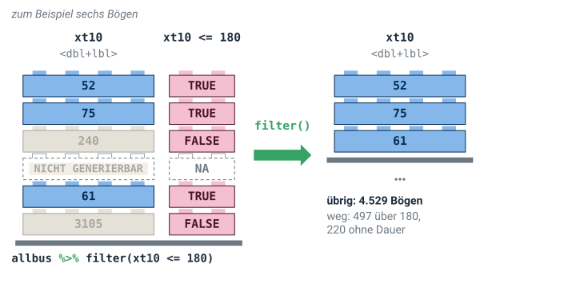

Daten sehen
Welche Formen können Antworten haben – und wie zeigst du sie, ohne dass die Grafik mehr verspricht als die Daten?
Was du nach dieser Sitzung kannst
- eine Verteilung lesen: Wo liegt der Gipfel, wie breit ist sie, läuft sie zu einer Seite aus?
- typische Formen erkennen: symmetrisch, linksschief, rechtsschief, mehrgipflig
- Mittelwert, Median und Boxplot im Bild verstehen und wissen, wann der Mittelwert in die Irre führt
- zur Frage die passende Grafik wählen: Balken, Histogramm, Boxplots, Balken auf 100 %, Punkte
- erkennen, wann eine Grafik mehr verspricht als die Daten
- eine Kette in R lesen und anpassen: mit
%>%Daten weiterreichen, mitto_label()Codes in Wörter übersetzen, abggplot()mit+Schichten auflegen, mitdrop_na()fehlende Werte ausdrücklich weglassen - erklären, warum Hineinzoomen und Abschneiden zu verschiedenen Ergebnissen führen
Schon bekannt und hier nur kurz erinnert: der Startblock (Sitzung 1), die Pipe mit einem Schritt wie allbus %>% filter(mode == 4) (Sitzung 2), frequency(), describe(), Median und fehlende Werte (Sitzung 3). Solche Stellen tragen ein graues Schild „kennst du aus Sitzung …“.
%>%.Vorweg: R lesen
R lesen: Startblock, Zeile, Kette
Startblock: kennst du aus Sitzung 1Code lesenDen Startblock kennst du aus Sitzung 1: Er lädt die Werkzeuge und legt den ALLBUS unter dem Namen allbus ab. allbus ist der ganze Datensatz, im Bild eine Bauplatte: jede Variable ein Turm, jede Antwort ein Stein. In RStudio führst du ihn zu Beginn aus. In der Code-Werkstatt hier auf der Seite ist das schon erledigt.
Rote Zeilen beim Laden, etwa „Attaching core tidyverse packages“, sind normal und kein Fehler. Öffne RStudio über dein Projekt. Findet R die Datei nicht, nimm wie in Sitzung 1 allbus <- read_spss(file.choose()).
So liest du eine Zeile, wie im Input heute: von links nach rechts, die Pipe %>% sprichst du „und dann“.
Neu heute: die Kette. Die Pipe mit einem Schritt kennst du aus Sitzung 2. Jetzt stehen mehrere Schritte untereinander, und jede Zeile bekommt das Ergebnis der Zeile darüber in ihr erstes Feld. allbus %>% to_label(hs01) %>% drop_na(hs01) liest du so: Nimm allbus, und dann übersetze hs01 in Wörter, und dann lass alle weg, die bei hs01 nichts angegeben haben. Wie die Bauplatte dabei Zeile für Zeile weiterwandert, zeigt das Bild in Aufgabe 1, Schritt 4.
Kurz gesagt: Eine Funktion sagt, was passiert, ihre Argumente sagen, womit und wie. Die Pipe %>% setzt das Ergebnis links als erstes Argument in die Funktion rechts. Eine Kette sind mehrere solcher Schritte untereinander.
Genauer erklärt: Objekt, Funktion, Argument
Ein Objekt ist ein Name, unter dem R sich etwas merkt. allbus ist der ganze Datensatz: eine Bauplatte voller Türme. Mit <- legst du etwas unter einem Namen ab: allbus <- read_spss(…) heißt „lies die Datei und leg sie unter dem Namen allbus ab“.
Eine Funktion ist ein Werkzeug: Sie bekommt etwas, tut etwas und gibt etwas zurück. In den Klammern stehen die Argumente: womit und wie. Was du nicht angibst, ist voreingestellt. Mit = stellst du ein Argument ein, etwa binwidth = 5.
Die Pipe %>% gibt das Ergebnis links als erstes Argument an die Funktion rechts weiter. allbus %>% frequency(ls01) ist dasselbe wie frequency(allbus, ls01). Darum steht der Datensatz in einer Kette nur einmal ganz oben. Mehr dazu im R-Workshop, Kapitel 3.
Häufige Verwechslung: = und <-. Mit = stellst du ein Argument ein (binwidth = 5), mit <- legst du ein Objekt unter einem Namen ab (allbus <- read_spss(…)).
Eine Grafik entsteht in Schichten
Code lesenSo entsteht in R ein Balkendiagramm der Lebenszufriedenheit, wie im Input heute beim Vertrauen in den Bundestag. Geh die Schritte durch: Bei jedem kommt eine Zeile dazu.
Kurz gesagt: Bis zur Leinwand reichst du die Daten mit %>% weiter („und dann“). Ab ggplot() legst du mit + Schicht auf Schicht. aes() sagt, welche Variable wohin kommt.
Häufige Verwechslung: %>% statt + nach ggplot(). R meldet dann „`mapping` must be created by `aes()`“. Ab der Leinwand kommen Schichten dazu, und die verbindet das Plus.
Thema 1: Balken und Häufigkeiten
Balken und Häufigkeiten
Was zeigt ein Balkendiagramm, und wann übertreibt es? Drei kurze Schritte, etwa 15 Minuten.
Erst schätzen, dann schauen
SchätzenDer ALLBUS 2023 hat über 5.000 Menschen gefragt: „Wie zufrieden sind Sie gegenwärtig, alles in allem, mit Ihrem Leben?“ Geantwortet wird von 0 (ganz unzufrieden) bis 10 (ganz zufrieden). Bevor du die Daten siehst: Wie, glaubst du, verteilen sich die Antworten?
Zieh jede Säule auf die Höhe, die du erwartest. Mit der Tastatur: Säule mit Tab anwählen, dann Pfeil hoch oder runter. Am Ende zählt nur, wie hoch die Säulen im Vergleich zueinander sind.
So liest du das: Der höchste Balken steht bei 8: Fast drei von zehn Befragten (29 %) antworten mit 8. Drei von vier antworten mit 7 oder mehr. Unter 5 bleibt nur etwa jede zwölfte Person. Die Antworten ballen sich rechts, nach links läuft die Verteilung flach aus.
| Wert | deine Skizze | Daten | Befragte |
|---|
Kurz gesagt: Eine Verteilung zeigt, wie viele Menschen welchen Wert angegeben haben. Der häufigste Wert heißt Modus, im Bild ist er der Gipfel. Eine Verteilung zeigt die ganze Form der Antworten, nicht nur eine Zahl.
Genauer erklärt: Warum erst schätzen, und warum nicht gleich den Mittelwert?
Der Mittelwert der Lebenszufriedenheit liegt bei 7,36. Diese eine Zahl verrät dir nicht, dass 8 die häufigste Antwort ist, und auch nicht, dass fast niemand ganz unten antwortet. Darum schaut man sich vor jeder Kennzahl die Verteilung an.
Das Schätzen hat einen eigenen Zweck: Wer vorher eine Erwartung festlegt, merkt, wo das eigene Bild von der Gesellschaft danebenliegt. Häufig liegt der geschätzte Gipfel bei 5 oder 6, also deutlich unter dem, was die Befragten tatsächlich sagen.
Die Zahlen sind ungewichtet; gewichtet ändert sich wenig (Mittelwert 7,40). Gewichtung ist Thema in Sitzung 6.
Vom Turm zum Stapel: Häufigkeiten als Balken
Tabelle: kennst du aus Sitzung 3, Balken: neuIm BildIn R ist jede Variable ein Turm: Jeder Stein darin ist die Antwort einer Person. Hier siehst du den Turm ls01 von 21 Befragten. Eine Person hat nicht geantwortet: Ihr Platz ist ein leerer Stein (NA). Sortier die Steine nach ihrem Wert und leg gleiche Werte aufeinander.
| Wert | Steine (Anzahl) | Anteil |
|---|
Kurz gesagt: Ein Balkendiagramm ist ein Bild von gezählten Stapeln. Die Höhe eines Stapels ist die absolute Häufigkeit, in der Tabelle aus Sitzung 3 die Spalte N. Der Anteil an allen gültigen Antworten ist die relative Häufigkeit (Valid %).
Genauer erklärt: Tabelle und Balken in R
Die Tabelle dazu kennst du aus Sitzung 3: allbus %>% frequency(ls01). Die Spalte N ist die Höhe der Stapel (für die 8: 1.506), Valid % ihr Anteil an den 5.164 gültigen Antworten (29,16 %). Die 82 Personen ohne gültige Antwort stehen unter „Total missing“ und liegen auf keinem Stapel.
Neu ist der Schritt ins Bild: geom_bar() zählt die Steine selbst. Du gibst ihm keine Tabelle, sondern die Bauplatte, und sagst mit aes(x = ls01), welcher Turm gezählt wird. So siehst du es in Vorweg: „Eine Grafik entsteht in Schichten“ und in Aufgabe 1.
Häufige Verwechslung: Die y-Achse von geom_bar() zeigt Anzahlen (count), keine Prozent. Wer beim Wert 8 „29 %“ sucht, findet dort 1.506. Die Form der Balken ist dieselbe.
Ehrlich zeigen: Achse und Bildunterschrift
DeutenMittlere Lebenszufriedenheit im Westen: 7,44, im Osten: 7,18. Der Unterschied ist klein. Eine Grafik kann ihn trotzdem riesig aussehen lassen, ohne dass eine Zahl falsch ist.
Kurz gesagt: Bei Balken liest das Auge die Länge. Deshalb beginnen Balken bei 0. Wer die Achse abschneidet, lässt kleine Unterschiede riesig aussehen, ohne dass eine Zahl falsch ist. Wer abweicht, sagt es in der Bildunterschrift.
Das gehört in jede Bildunterschrift
- Quelle: ALLBUS 2023
- wie viele: n = 3.510 (West) und 1.654 (Ost)
- gewichtet oder ungewichtet
- wenn die Achse nicht bei 0 beginnt: ausdrücklich sagen
Häufige Verwechslung: „Doppelt so lang“ heißt nicht „doppelt so zufrieden“. Wie lang ein Balken wirkt, hängt davon ab, wo die Achse beginnt. Verglichen werden im Bild Längen, nicht Zufriedenheit.
Aufgabe 1: Gesundheit zeigen
PflichtWie beurteilen die Befragten ihre Gesundheit?
Ziel: Am Ende hast du eine beschriftete Grafik der Gesundheit ohne fehlende Werte und kannst sagen, welche Einschätzung am häufigsten ist, wie viele Antworten fehlen und wie groß n ist.
Grundlage: Grundlage 1, Balken und Häufigkeiten und Schichten einer Grafik
- Arbeite in der Code-Werkstatt direkt hier oder in RStudio. In RStudio führst du vorher den Startblock in „R lesen“ aus.
- Führe die erste Vorlage aus.
to_label()ersetzt die Codes durch ihre Wörter, damit auf der Achse „SEHR GUT“ statt 1 steht. neu heute![Oben links der Turm hs01 vom Typ dbl+lbl mit sechs Steinen, zum Beispiel sechs Befragte, von oben nach unten: 2 mit Aufkleber GUT, 1 mit SEHR GUT, 2 mit GUT, ein leerer gestrichelter Stein mit dem Aufkleber KEINE ANGABE, 3 mit ZUFRIEDENSTELLEND, 4 mit WENIGER GUT. Ein grüner Pfeil to_label() führt zum lila Turm hs01 vom Typ fct mit den Wörtern GUT, SEHR GUT, GUT, einem leeren Stein NA (orange umrandet), ZUFRIEDENSTELLEND und WENIGER GUT. Ein grüner Pfeil nach unten, beschriftet ggplot(aes(x = hs01)) + geom_bar(), führt zu Stapeln über einer Achse: SEHR GUT ein Stein, GUT zwei Steine, ZUFRIEDENSTELLEND ein Stein, WENIGER GUT ein Stein, SCHLECHT keiner, ganz rechts NA mit einem leeren Stein, orange umrandet. Darunter der Code allbus %>% to_label(hs01) %>% ggplot(aes(x = hs01)) + geom_bar().](./s4-to-label.svg)
to_label(hs01)tauscht jede Zahl gegen ihren Aufkleber: Aus 2 wird GUT. Ein leerer Stein bleibt leer; sein Aufkleber KEINE ANGABE fällt ab, er ist jetzt einfachNA.geom_bar()stapelt gleiche Wörter zu Balken und gibt den leeren Steinen einen eigenen Balken ganz rechts: NA. Über den Türmen steht der Typ:<dbl+lbl>heißt Zahl mit Aufkleber,<fct>heißt Wörter. Die Steine sind ein Beispiel mit sechs Befragten. - Schau ganz nach rechts: Dort steht ein Balken NA. (Überlappen sich in RStudio die Beschriftungen, zieh das Plots-Fenster breiter.) Das sind Personen ohne gültige Antwort. Bei Zahlen auf der Achse lässt ggplot fehlende Werte mit einer Warnung weg (wie bei der Lebenszufriedenheit in „Schichten“), bei Wörtern zeigt es sie als eigenen Balken NA. Wie viele es sind, zeigt dir
allbus %>% frequency(hs01)in der Zeile „Total missing“ (kennst du aus Sitzung 3). Lass sie mitdrop_na(hs01)weg und beschrifte die Grafik: Passe in der zweiten Vorlage die markierten Stellen an und führe sie aus.![Links eine Bauplatte, 5,246 × 579, mit den Türmen hs01 (Typ fct) und age und Auslassungspunkten für weitere Türme; gezeigt sind zum Beispiel fünf Befragte: GUT und 34; ein leerer Stein NA und 61, grau umrandet, die 61 ist grau; SEHR GUT und ein leerer Stein bei age, orange umrandet; ZUFRIEDENSTELLEND und 72; GUT und 45. Ein grüner Pfeil drop_na(hs01) führt zu einer Bauplatte, 5,209 × 579, mit vier Reihen: GUT und 34, SEHR GUT und leerem Stein bei age, ZUFRIEDENSTELLEND und 72, GUT und 45. Legende: grau umrandet heißt hs01 leer, die Reihe fällt weg; orange umrandet heißt nur age leer, die Reihe bleibt. Darunter der Code allbus %>% to_label(hs01) %>% drop_na(hs01).](./s4-drop-na.svg)
drop_na(hs01)schaut nur in den Turmhs01: Wer dort einen leeren Stein hat, fällt mit der ganzen Reihe weg (grau). Wer nur bei einer anderen Variable nichts angegeben hat, hier beim Alter, bleibt. Von 5.246 Reihen bleiben 5.209. R schreibt Tausender mit Komma: 5,246 heißt 5.246. Die Steine sind ein Beispiel mit fünf Befragten; die Reihenzahlen stammen aus dem ALLBUS 2023. - Lies deine fertige Kette einmal von oben nach unten. Wo reicht
%>%die Daten weiter, wo legt+eine Schicht auf?![Links der Code untereinander: allbus %>%, to_label(hs01) %>%, drop_na(hs01) %>%, ggplot(aes(x = hs01)) +, geom_bar(). Rechts neben jeder Zeile ihr Ergebnis, die ersten vier verbunden durch grüne Pfeile nach unten. Nach allbus: das Namensschild allbus und eine Bauplatte, 5,246 × 579. Nach to_label: dieselbe Bauplatte, ihr erster Turm ist jetzt lila, beschriftet hs01 in Wörtern. Nach drop_na: eine niedrigere Bauplatte, 5,209 × 579. Nach ggplot: eine leere graue Leinwand, nur mit der x-Achse: SEHR GUT, GUT, ZUFRIEDENSTELLEND, WENIGER GUT und SCHLECHT; eine y-Achse mit Zahlen gibt es noch nicht. Dann eine Trennlinie mit einem grünen Plus; darüber steht bis hier: Daten weiterreichen mit %>%, darunter ab der Leinwand: Schichten mit +. Nach geom_bar(): dieselbe Leinwand, jetzt mit einer y-Achse von 0 bis 2000 und fünf dunkelgrauen Balken, SEHR GUT knapp 900, GUT gut 2000 und damit am höchsten, ZUFRIEDENSTELLEND knapp 1500, WENIGER GUT gut 600, SCHLECHT knapp 200.](./s4-kette.svg)
Deine Kette Zeile für Zeile. Bis ggplot()reicht%>%die Bauplatte jeweils ins erste Feld der nächsten Funktion.ggplot(aes(x = hs01))legt die leere Leinwand an, mit den Stufen auf der x-Achse.+ geom_bar()legt die Balken darauf und bringt die Zählachse mit.labs()aus deiner Vorlage ist eine weitere Schicht und kommt ebenfalls mit+dazu. Balkenhöhen: ALLBUS 2023, ungewichtet, n = 5.209. - Deuten: Wo beginnt die Achse?
Grundlage: Grundlage 1c: Ehrlich zeigen
Weiterdenken in der Probier-Werkstatt (für die Aufgabe nicht nötig)
Für die Aufgabe reichen die Vorlagen oben. Hier ist Platz für eigene Fragen. Eine Idee: Wie schätzen Menschen ab 65 ihre Gesundheit ein? Die Probier-Werkstatt startet mit einem Vorschlag.
Hilfe, Stufe 1: Denkanstoß
Bei Wörtern auf der Achse zeigt ggplot fehlende Werte als eigenen Balken „NA“. drop_na(hs01) lässt genau diese Personen weg. Die Zahl für die Bildunterschrift sind alle, die übrig bleiben.
Hilfe, Stufe 2: Wo schaue ich?
Führe allbus %>% frequency(hs01) aus. Die Zeile „Total missing“ zählt den NA-Balken, „Total valid“ ist dein n. Den häufigsten Wert erkennst du an der größten Zahl in der Spalte N.
Hilfe, Stufe 3: Lösung
Im NA-Balken stecken 37 Personen, übrig bleiben 5.209. Am häufigsten ist „gut“ (2.071 Personen, 40 %). In der zweiten Vorlage ersetzt du den Titel durch "Gesundheitszustand" und n durch 5.209.
Ohne Grafik lösbar: allbus %>% frequency(hs01) zeigt dieselben Zahlen als Tabelle.
Thema 2: Formen von Verteilungen
Formen von Verteilungen
Woran erkennt man eine Verteilung auf einen Blick? Etwa 10 Minuten.

Welche Formen kann eine Verteilung haben?
Im BildVerteilungen haben typische Formen. Wer sie erkennt, kann eine Grafik in Sekunden lesen. Hier sind vier echte Beispiele aus dem ALLBUS 2023. Das Dreieck zeigt den Mittelwert, der gestrichelte Strich den Median (mehr dazu in Grundlage 4).
Jede Säule hat mindestens einen Stein, auch wenn nur wenige Personen dahinterstehen. Die genauen Zahlen stehen unter jedem Bild für den Screenreader und in „Genauer erklärt“.
Formen-Labor
Verändere die Form und beobachte, wohin Mittelwert und Median wandern. 40 Steine, Werte 0 bis 10.
Kurz gesagt: Die Schiefe sagt, ob eine Verteilung zu einer Seite flach ausläuft. Eine Verteilung heißt nach der Seite, auf der sie ausläuft, nicht nach ihrem Gipfel. Der Mittelwert wird vom Auslauf mitgezogen, der Median kaum.
Was die Form über die Frage verrät: Zähl die Stufen (fünf, sieben, zehn oder sehr viele Werte), such den Gipfel und achte auf Häufungen. Bei offenen Zahlenangaben runden Menschen, dann ragen runde Werte wie 40 heraus.
Genauer erklärt: Schiefe als Zahl und was die Form inhaltlich bedeutet
describe() aus mariposa gibt die Schiefe als Zahl aus (Skewness). Negativ heißt linksschief (Lebenszufriedenheit: −1,07), positiv heißt rechtsschief, nahe 0 heißt ungefähr symmetrisch. Als grobe Faustregel gilt ein Betrag unter 0,5 als ungefähr symmetrisch.
Aber Vorsicht: Die Schiefe als Zahl sieht keine Gipfel. Die Leihmutterschaft hat eine Schiefe von +0,28 und wäre nach der Faustregel symmetrisch, obwohl sie deutlich mehrgipflig ist. Darum gilt: erst anschauen, dann rechnen. (Im Datensatz ist vm18 als 1 bis 7 gespeichert; −3 entspricht 1.)
Die Form ist eine inhaltliche Aussage: Linksschief heißt hier, dass die meisten zufrieden sind und wenige sehr unzufrieden. Mehrgipflig heißt oft, dass eine Gesellschaft bei einer Frage gespalten ist. Ein Mittelwert allein würde dann Einigkeit vortäuschen, wo es keine gibt.
Bei schiefen Verteilungen berichtest du den Median mit, weil der Mittelwert in Richtung des Auslaufs gezogen wird.
Häufige Verwechslung: „Linksschief“ heißt nicht „die meisten sind links“. Bei der Lebenszufriedenheit stehen die meisten rechts. Die Verteilung läuft nur links flach aus.
→ In der freien Karte: Schiefe mit eigenen Daten ausprobierenAufgabe 2: Der Rätselkasten
ZusatzWelche Frage steckt hinter welcher Form?
Ziel: Am Ende erkennst du an Stufenzahl, Gipfel und Häufungen, welche Frage hinter einer Verteilung steckt.
Grundlage: Grundlage 2, Formen von Verteilungen
Vier Verteilungen ohne Beschriftung, fünf Fragen aus dem ALLBUS. Ordne zu. Eine Frage bleibt übrig. Achte auf drei Dinge: Wie viele Stufen? Wo liegt der Gipfel? Gibt es Häufungen?
dw15Arbeitsstunden pro Wochepa01Links-rechts-Einstufung (1 = links, 10 = rechts)pa02aPolitisches Interesse (1 = sehr stark, 5 = überhaupt nicht)vm20Sterbehilfe bei dauerhafter Abhängigkeit (−3 sehr falsch, +3 sehr richtig; in R als 1 bis 7 gespeichert)pt03Vertrauen in den Bundestag (1 = gar keins, 7 = großes)
Prüfe eine Zuordnung in R. Tausch beide markierten Stellen gegen die Variable, die du prüfen willst; sie müssen gleich sein. Kontrolle: Unter der x-Achse steht dann die Beschriftung deiner Frage (bei älteren ggplot2-Versionen steht dort der Variablenname).
Weiterdenken in der Probier-Werkstatt (für die Aufgabe nicht nötig)
Für die Aufgabe reichen die Vorlagen oben. Hier ist Platz für eigene Fragen. Eine Idee: Wie verteilt sich die Frage, die übrig geblieben ist? Die Probier-Werkstatt startet mit einem Vorschlag.
Hilfe, Stufe 1: Denkanstoß
Zähl zuerst die Säulen. Fünf Stufen hat nur eine der Fragen. Viele schmale Säulen, eine davon ragt weit heraus: Das deutet auf eine offene Zahlenangabe, bei der Menschen runden.
Hilfe, Stufe 2: Wo schaue ich?
Zähl die Säulen von A bis D und vergleiche mit den Stufen in der Liste: fünf Stufen hat pa02a, zehn pa01, sieben vm20 und pt03, viele Werte dw15. Bei den beiden mit sieben Stufen entscheidet die Lage des Gipfels.
Hilfe, Stufe 3: Lösung
A: Sterbehilfe (sieben Stufen, Gipfel ganz rechts). B: Arbeitsstunden (viele Werte, die Säule bei 40 ragt weit heraus, Spitzen bei runden Zahlen). C: Politisches Interesse (fünf Stufen, Gipfel bei „mittel“). D: Links-rechts (zehn Stufen, Gipfel bei 5). Übrig bleibt das Vertrauen in den Bundestag.
Thema 3: Viele Werte: das Histogramm
Viele Werte: das Histogramm
Wie zeigt man eine Variable mit sehr vielen Werten, und was macht die Kistenbreite? Etwa 10 Minuten.
Viele Werte: Steine in Kisten (Histogramm)
Im BildBeim Alter gibt es 79 verschiedene Werte, von 18 bis 99 Jahren. Ein Stapel pro Jahr wäre unübersichtlich. Darum sammelt man die Steine in Kisten, zum Beispiel alle von 20 bis 24 Jahren in eine. Verändere die Kistenbreite und schau, wie sich das Bild verändert.
So liest du das: Am dichtesten besetzt sind die Jahre von 50 bis 64, dort stehen knapp drei von zehn Befragten. Unter 30 und über 80 sind es deutlich weniger. Die Form ist breit und läuft auf keiner Seite lang aus: grob symmetrisch. Der Mittelwert (52,5) liegt etwas unter dem Median (54), die Schiefe ist aber fast 0 (−0,03). Bei breiten, flachen Verteilungen können Mittelwert und Median ein wenig auseinanderliegen, ohne dass die Verteilung schief ist.
Werte weit draußen: Ein Histogramm reicht vom kleinsten bis zum größten Wert. Liegen einzelne Werte weit draußen, landet der Rest in einer Kiste; dann hilft ein Ausschnitt, und der gehört in die Bildunterschrift.
Kurz gesagt: Ein Histogramm zeigt eine Variable mit vielen Werten. Jede Säule ist eine Kiste, eine Klasse, und zählt, wie viele Werte hineinfallen. Balken nimmst du für wenige Stufen, das Histogramm für viele Werte.
Genauer erklärt: Wie breit sollen die Kisten sein?
Sind die Kisten zu schmal, wird das Bild zappelig, und Zufall sieht aus wie ein Muster. Sind sie zu breit, verschwindet die Form. Probier mehrere Breiten und wähl die, bei der die Form ruhig, aber noch erkennbar ist. Beim Alter sind 5 Jahre ein guter Start.
In R stellst du die Breite mit binwidth ein, zum Beispiel binwidth = 5. Mit boundary = 0 beginnen die Kisten bei 0, 5, 10 und so weiter. Was passiert, wenn du keine Breite angibst, findest du in Aufgabe 3 heraus. Zwischen den Säulen eines Histogramms gibt es keine Lücken, weil die Werte lückenlos ineinander übergehen.
Häufige Verwechslung: Wenn du die Kisten breiter machst, werden die Säulen höher, weil mehr Werte hineinfallen. Die Menschen sind dieselben, nur anders sortiert.
Aufgabe 3: Wie lange dauert der Fragebogen?
ZusatzWie lange brauchen die Befragten für den Fragebogen?
Ziel: Am Ende hast du ein Histogramm der Bearbeitungsdauer mit einem begründeten Ausschnitt und einer passenden Kistenbreite, und du siehst, wo Menschen runden.
Grundlage: Grundlage 3, das Histogramm
- Lass dir die Kennzahlen der Bearbeitungsdauer
xt10ausgeben. Schau auf Median und Spannweite. Range ist die Spannweite: größter minus kleinster Wert. describe(): kennst du aus Sitzung 3 - Zeichne ein Histogramm ohne weitere Angaben. Was siehst du, und warum? R meldet zwei Dinge: dass es 30 Kisten nimmt, und dass 220 Zeilen ohne Wert weggelassen wurden. Beides ist keine Fehlermeldung, sondern ein Hinweis.
- Schneide die extremen Fälle ab:
filter(xt10 <= 180)behält nur die Bögen bis 180 Minuten. Wie viele sind danach noch im Bild?
filter()prüft jede Reihe:xt10 <= 180ergibt TRUE, FALSE oder bei fehlender Dauer NA. Nur Reihen mit TRUE bleiben. Darum fallen zwei Gruppen weg: 497 Bögen über 180 Minuten und die 220 ohne Dauer. Die Steine sind ein Beispiel mit sechs Bögen; die Zahlen daneben stammen aus dem ALLBUS 2023. - Stell die Kistenbreite ein.
binwidthist ein Argument vongeom_histogram(). Probierbinwidth = 5,binwidth = 30undbinwidth = 1.boundary = 0sorgt dafür, dass die Kisten bei 0, 5, 10 … beginnen.![Oben der Aufruf geom_histogram(binwidth = 5, boundary = 0) als Code-Bausteine: der Funktionsname grün, die beiden Argumente orange. Unter binwidth = 5 steht Breite jeder Kiste, unter boundary = 0 erste Kante bei 0, daneben: ohne Angabe 30 Kisten. Darunter zum Beispiel sieben Bögen mit 41, 43, 52, 57, 58, 63 und 71 Minuten. Erste Reihe, binwidth = 5: Achse von 40 bis 75 in Fünferschritten; in der Kiste 40 bis 45 liegen 41 und 43, in 50 bis 55 die 52, in 55 bis 60 die 57 und 58, in 60 bis 65 die 63, in 70 bis 75 die 71. Zweite Reihe, binwidth = 30: Achse 30, 60, 90; in der Kiste 30 bis 60 stapeln sich 41, 43, 52, 57 und 58, in der Kiste 60 bis 90 liegen 63 und 71.](./s4-binwidth.svg)
Argumente stellen eine Funktion ein. binwidthlegt fest, wie breit jede Kiste ist; lässt du es weg, nimmt ggplot 30 Kisten. Dieselben sieben Bögen ergeben mit Kisten von 5 Minuten fünf niedrige Säulen, mit Kisten von 30 Minuten zwei hohe. Die Steine sind ein Beispiel mit sieben Bögen.
Weiterdenken in der Probier-Werkstatt (für die Aufgabe nicht nötig)
Für die Aufgabe reichen die Vorlagen oben. Hier ist Platz für eigene Fragen. Eine Idee: Wie viele Bögen lagen länger als einen Tag herum, und auf welchem Weg kamen sie? Die Probier-Werkstatt startet mit einem Vorschlag.
Hilfe, Stufe 1: Denkanstoß
Ein Histogramm reicht vom kleinsten bis zum größten Wert. Liegt ein einziger Wert sehr weit draußen, quetscht er alle anderen in die erste Kiste. Wer eine Dauer einträgt oder schätzt, rundet gern auf volle Stunden.
Hilfe, Stufe 2: Wo schaue ich?
Median und Spannweite (Range) stehen in der Ausgabe von Schritt 1. Die Zahl der Bögen nach dem Ausschnitt steht in Schritt 3 in der Spalte N. Die Spitzen siehst du in Schritt 4 mit binwidth = 1.
Hilfe, Stufe 3: Lösung
Median 65 Minuten, Range 61.887 Minuten, also gut sechs Wochen (vermutlich unterbrochene Bögen). Mit dem Filter bleiben 4.529 von 5.026 Bögen; filter() lässt dabei auch die 220 fehlenden Angaben weg. Mit Kisten von 1 Minute ragt die Säule bei 60 heraus (216 Bögen, bei 59 nur 38), kleinere Spitzen bei 45, 75 und 90: Menschen runden. Bei 30 Minuten verschwinden die Spitzen. In die Bildunterschrift gehört: nur Bögen bis 180 Minuten, n = 4.529.
Ohne Grafik lösbar: allbus %>% describe(xt10) gibt Median und N. Die Rundungsspitzen zeigt auch allbus %>% filter(xt10 <= 180) %>% frequency(xt10): Bei 60 stehen 216 Bögen, bei 59 nur 38.
Thema 4: Mitte, Streuung und Boxplot
Mitte, Streuung und Boxplot
Wie liest man einen Boxplot, und warum hängt der Median nicht an Ausreißern? Etwa 15 Minuten.
Mitte und Streuung: vom Lineal zum Boxplot
Median: kennst du aus Sitzung 3, Boxplot: neuIm BildElf Befragte nennen ihre Wochenarbeitsstunden. Jede Person steht auf dem Lineal an ihrer Stundenzahl. Geh die vier Schritte durch.
Hineinzoomen oder Abschneiden? Beim Hineinzoomen zeigt die Grafik nur einen Ausschnitt, gerechnet wird weiter mit allen. Beim Abschneiden fallen Fälle vorher weg, und Median und Kasten ändern sich, wie eben ohne die 44 und 45 Stunden. Beides probierst du in Aufgabe 4 aus.
So sieht ein echter Boxplot aus
Das Alter der Befragten im Westen und im Osten, gezeichnet aus allen 5.223 Altersangaben. Jeder Kasten fasst Tausende Personen zusammen.
Zwei Boxplots. West, 3.553 Personen: Kasten von 36 bis 66 Jahre, Median 53, Antennen von 18 bis 97. Ost, 1.670 Personen: Kasten von 39 bis 68 Jahre, Median 56, Antennen von 18 bis 99.
So liest du das: Der Median liegt im Osten 3 Jahre höher (56 statt 53), auch beide Kastenränder liegen höher. Die Befragten im Osten sind im Mittel also etwas älter. Die Kästen sind fast gleich lang: Das Alter streut in beiden Gruppen ähnlich stark.
Kurz gesagt: Der Mittelwert ist der Schwerpunkt, der Median steht in der Mitte der Reihe (beides kennst du aus Sitzung 3). Neu ist der Boxplot: Er zeigt die mittlere Hälfte als Kasten, den Median als Strich und den Rest als Antennen (Fachbegriff: Whisker) und Punkte.
Genauer erklärt: Streuung, Voraussetzungen und Rechenweise
Streuung sagt, wie weit die Werte auseinanderliegen. Die Spannweite ist größter minus kleinster Wert (45 − 22 = 23 Stunden). Der Interquartilsabstand ist die Länge des Kastens (43 − 34 = 9 Stunden); er reagiert kaum auf Ausreißer. Die Standardabweichung misst den typischen Abstand zum Mittelwert; sie kommt in der freien Karte Schritt für Schritt.
Voraussetzung: Einen Mittelwert darfst du berechnen, wenn die Abstände zwischen den Werten gleich viel bedeuten (metrisch, etwa Stunden oder Alter). Bei einer Rangfolge wie „sehr gut … schlecht“ berichtest du besser den Median. Bei schiefen Verteilungen und Ausreißern gehören beide in den Bericht.
Wo endet eine Antenne? Beim äußersten Wert, der noch innerhalb von anderthalb Kastenlängen vom Kasten liegt. Hier: Kastenlänge 9, mal 1,5 sind 13,5. Die Grenze links liegt bei 34 − 13,5 = 20,5 Stunden. Wer weiter draußen liegt, wird als Punkt gezeichnet. Mit 22 Stunden liegt niemand draußen, mit 0 Stunden schon.
mariposa und ggplot berechnen Quartile bei manchen Daten leicht unterschiedlich. Bei diesen elf Personen kommt in beiden 34 und 43 heraus.
Häufige Verwechslung: Der Strich im Kasten ist der Median, nicht der Mittelwert. Und ein breiterer Abschnitt heißt nicht „mehr Leute“: In jedem Viertel stehen gleich viele Personen, sie liegen nur weiter auseinander.
→ In der freien Karte: Median, Quartile und Boxplot mit 200 BefragtenAufgabe 4: Papier, online oder Interview?
PflichtDauert das Ausfüllen auf Papier länger als online?
Ziel: Am Ende kannst du begründen, auf welchem Weg das Ausfüllen am längsten dauert, und sagen, wer dabei im Bild fehlt.
Grundlage: Grundlage 4, Mitte, Streuung und Boxplot
Der ALLBUS 2023 wurde auf drei Wegen erhoben (mode): CAPI ist ein persönliches Interview mit Laptop, CAWI ein Online-Fragebogen, MAIL ein Papierbogen per Post (mode == 4, kennst du aus Sitzung 2). Die Bearbeitungsdauer xt10 hat Ausreißer: Einzelne Bögen lagen wochenlang herum (der längste gut sechs Wochen, über 61.000 Minuten). Damit man im Bild etwas sieht, muss man also einen Ausschnitt wählen. Dafür gibt es zwei Wege, und sie führen zu verschiedenen Ergebnissen.
Noch etwas fällt bei den Papierbögen auf: 71,5 % ihrer Dauerangaben sind Vielfache von 5, also etwa 45, 60 oder 90 Minuten. Beim Interview sind es 39,5 %, online 20 %. Das spricht dafür, dass auf Papier oft geschätzt und gerundet wurde. Bei 220 Papierbögen fehlt die Dauer ganz.
- Hineinzoomen:
coord_cartesian()zeigt nur den Bereich bis 180 Minuten, rechnet aber mit allen Bögen. R meldet dabei „Removed 220 rows“: Das sind die Papierbögen, bei denen die Dauer ganz fehlt. - Abschneiden:
filter()wirft alle Bögen über 180 Minuten hinaus, bevor gerechnet wird. Vergleiche die beiden Bilder: Wo liegt jetzt der Strich im Kasten?![Zwei Hälften mit demselben Turm, zum Beispiel sieben Papierbögen, von unten nach oben nach Dauer sortiert: 30, 45, 55, 70, 110, 400 und 2600 Minuten. Links, überschrieben HINEINZOOMEN und coord_cartesian(ylim = c(0, 180)): Ein gestrichelter Rahmen umfasst die fünf unteren Steine, beschriftet sichtbar: 0 bis 180. Die Steine 400 und 2600 ragen darüber hinaus, bleiben aber blau, beschriftet außerhalb des Bilds, rechnen aber mit. Der Stein 70 ist orange umrandet: Median 70, aus 7 Bögen. Rechts, überschrieben ABSCHNEIDEN und filter(xt10 <= 180): Die Steine 400 und 2600 sind grau, beschriftet fallen vorher weg. Der Stein 55 ist orange umrandet: Median 55, aus 5 Bögen.](./s4-zoom-filter.svg)
Der Strich im Kasten ist der Median: der mittlere Stein, wenn man die Bögen nach Dauer sortiert. Beim Hineinzoomen rechnen alle Steine mit, auch die, die über 180 aus dem Bild ragen. Beim Abschneiden fallen die langen Bögen weg, bevor gerechnet wird, und ein anderer Stein steht in der Mitte. Die Steine sind ein Beispiel mit sieben Papierbögen. - Hol dir die Zahlen für einen Weg, einmal ohne und einmal mit Filter. Tausch die markierte Zahl: 2 = CAPI, 3 = CAWI, 4 = MAIL. describe(): kennst du aus Sitzung 3
show =wählt aus, welche Kennzahlendescribe()zeigt, hier Median und Quartile. In der Ausgabe ist Q25 das untere Quartil (Q1) und Q75 das obere (Q3): die Ränder des Kastens. Das Komma infilter(mode == 4, xt10 <= 180)heißt „und“: Es bleiben nur Papierbögen, die höchstens 180 Minuten dauerten.
Weiterdenken in der Probier-Werkstatt (für die Aufgabe nicht nötig)
Für die Aufgabe reichen die Vorlagen oben. Hier ist Platz für eigene Fragen. Eine Idee: Sind die Befragten auf den drei Wegen unterschiedlich alt? Die Probier-Werkstatt startet mit einem Vorschlag.
Fürs Plenum
Welche der beiden Grafiken würdet ihr drucken, und was muss in die Bildunterschrift? Bringt eure Antwort mit.
Hilfe, Stufe 1: Denkanstoß
Der Strich im Kasten ist der Median. Hineinzoomen ändert nur, was du siehst. filter() ändert, wer mitgerechnet wird. Frag dich: Bei welchem Erhebungsweg gibt es besonders viele sehr lange Bögen?
Hilfe, Stufe 2: Wo schaue ich?
Die Mediane liest du in den Ausgaben von Schritt 3 ab, je Weg einmal ohne und einmal mit Filter. Wie viele herausfallen, siehst du an N. Wie viele Angaben ganz fehlen, steht unter „Missing“.
Hilfe, Stufe 3: Lösung
Mit allen Bögen: Papier 75, Interview 70, online 49 Minuten. Mit Filter: Interview 70, Papier 60, online 45. Der Filter wirft 306 von 1.436 Papierbögen hinaus (21 %), aber nur 14 von 2.003 Interviews. Dazu kommt: 71,5 % der Papier-Angaben sind Vielfache von 5, beim Interview 39,5 %, online 20 %; auf Papier wurde also vermutlich oft geschätzt. Bei 220 Papierbögen fehlt die Dauer ganz. Ehrlich ist: Hineinzoomen, und in der Bildunterschrift sagen, dass die Papier-Dauer geschätzt ist und 220 Angaben fehlen.
Ohne Grafik lösbar: Die Vorlagen in Schritt 3 geben Median, Quartile, N und Missing für jeden Weg.
Überblick: Welches Bild für welche Frage?
Grafik wählen, Grenzen kennen
Alle vier Themen zusammen: welche Grafik wann passt und wo sie täuschen kann.
Welches Bild für welche Frage?
ZuordnenDie Form der Grafik ergibt sich aus zwei Fragen: Wie viele Variablen zeigst du? Und hat jede wenige Stufen (zum Beispiel „gar kein“ bis „großes Vertrauen“) oder viele Werte (zum Beispiel das Alter)?
Kurz gesagt: Zähl erst die Variablen, dann ihre Stufen. Eine Gruppe wie Ost/West zählt mit: „Alter nach Ost und West“ sind zwei Variablen, eine mit vielen Werten und eine mit zwei Stufen. Wie viele Stufen eine Variable hat und was ihre Zahlen bedeuten, nennt man ihr Skalenniveau.
Genauer erklärt: nominal, ordinal, metrisch
- Nominal: Kategorien ohne Reihenfolge, etwa der Familienstand (verheiratet, ledig, geschieden …).
- Ordinal: Kategorien mit Reihenfolge, aber ohne gleich große Abstände, etwa das Vertrauen in Zeitungen von „gar kein“ bis „groß“.
- Metrisch: Zahlen mit gleich großen Abständen, etwa Alter oder Stunden.
Nominal und ordinal mit wenigen Stufen fasst man als kategorial zusammen. Die Lebenszufriedenheit (0 bis 10) liegt dazwischen: Man berechnet einen Mittelwert, zeigt sie aber als Balken, weil jede der elf Stufen für sich zählt. Für den Entscheidungsbaum zählt sie deshalb als „wenige Stufen“.
Voraussetzungen: Was jede Grafik braucht und wo sie täuschen kann
| Grafik | braucht | Vorsicht |
|---|---|---|
| Balken | eine Variable mit wenigen Stufen | Prozent von wem? Gültige Antworten (Valid %) nehmen, fehlende nennen. |
| Histogramm | eine Variable mit vielen Werten (metrisch) | Kistenbreite und Ausschnitt verändern das Bild. Beides nennen. |
| Boxplots | viele Werte und Gruppen | Genug Personen je Gruppe; n je Gruppe nennen. Wer weggelassen oder abgeschnitten wird, verändert den Vergleich. |
| Balken auf 100 % | zwei Variablen mit wenigen Stufen | Versteckt, wie groß die Gruppen sind. n dazuschreiben. |
| Punkte | zwei Variablen mit vielen Werten | Bei wenigen Stufen liegen Punkte übereinander. geom_jitter() streut sie leicht. |
Für alle gilt: Filtern und Weglassen ändern das Ergebnis. Sag immer, wer im Bild fehlt. Aussagen über ganz Deutschland brauchen eine Gewichtung, weil der Osten im ALLBUS absichtlich stärker vertreten ist (Sitzung 6).
Häufige Verwechslung: Eine Zahl im Datensatz macht eine Variable nicht metrisch. Beim Familienstand stehen Zahlen für „verheiratet“, „ledig“ und so weiter. Die Zahlen sind nur Namen; rechnen kannst du damit nichts.
Zum Schluss: Mitnehmen
Das Wichtigste aus dieser Sitzung
- Eine Verteilung zeigt, wie viele Menschen welchen Wert angegeben haben. Eine Kennzahl allein verschweigt ihre Form.
- Formen: symmetrisch, linksschief (läuft links aus), rechtsschief (läuft rechts aus), mehrgipflig (gespalten).
- Der Median bleibt in der Mitte, der Mittelwert wird von Ausreißern und vom Auslauf gezogen.
- Wenige Stufen: Balken. Viele Werte: Histogramm. Viele Werte nach Gruppen: Boxplots. Zwei Variablen mit wenigen Stufen: Balken auf 100 %. Zwei mit vielen Werten: Punkte.
- Balken beginnen bei 0. Jede Grafik nennt Quelle, n und ob gewichtet wurde.
- Filtern und Weglassen ändern das Ergebnis. Hineinzoomen mit
coord_cartesian()ändert nur den Ausschnitt,filter()ändert, wer mitgerechnet wird. Sag immer, wer im Bild fehlt (Aufgabe 4). - In R: Daten mit
%>%weiterreichen, abggplot()Schichten mit+;drop_na()lässt fehlende Werte ausdrücklich weg.
Prüf dich selbst
5 FragenDein Skript zum Mitnehmen
Alle Vorlagen dieser Sitzung in einer Datei, mit Kommentaren. Öffne sie in RStudio und führe sie Block für Block aus.